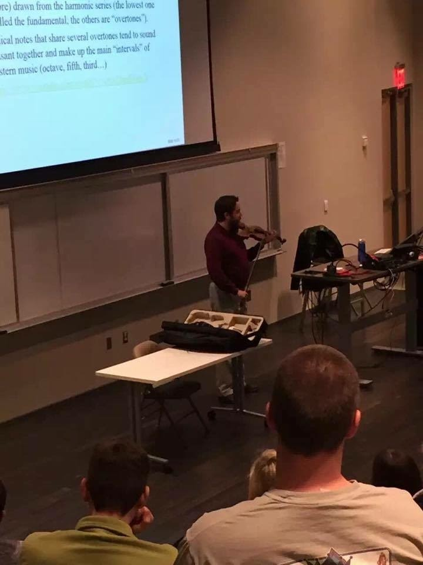

Teaching
Contents
BACK TO TOP
Statements, etc.
BACK TO TOP
Positions Held
BACK TO TOP
Courses Taught

Here, I am demonstrating harmonics and the overtone series on my violin for my Unversity Physics I class at the University of Arkansas (December 3, 2015).
- Arkansas Tech University
- General Physics II (Spring 2016)
- Introduction to Physical Sciences (Fall 2015 & Spring 2016)
- Physical Science Laboratory (Fall 2015 & Spring 2016)
- Physics Laboratory I (Fall 2015 & Spring 2016)
- Physics Laboratory II (Fall 2015 & Spring 2016)
- University of Arkansas
- University Physics I (Fall 2015)
- Survey of the Universe (Fall 2013 - Fall 2014)
- Survey of the Universe Laboratory (Fall 2012 - Summer 2013)
- College Physics II Drill (Spring 2012)
- University Physics I Laboratory (Fall 2008)
- Private Violin Lessons (2013 - 2014)
- Pittsburg State University
- Astronomy Laboratory (Spring 2006 - Spring 2008)
- General Physics II (Spring 2016)
- Introduction to Physical Sciences (Fall 2015 & Spring 2016)
- Physical Science Laboratory (Fall 2015 & Spring 2016)
- Physics Laboratory I (Fall 2015 & Spring 2016)
- Physics Laboratory II (Fall 2015 & Spring 2016)
- University Physics I (Fall 2015)
- Survey of the Universe (Fall 2013 - Fall 2014)
- Survey of the Universe Laboratory (Fall 2012 - Summer 2013)
- College Physics II Drill (Spring 2012)
- University Physics I Laboratory (Fall 2008)
- Astronomy Laboratory (Spring 2006 - Spring 2008)
BACK TO TOP
Student Evaluations
Word cloud of all the student evaluation comments I have received.
BACK TO TOP
Student Supervision
Accredited Supervisor for Masters and PhD Students at Swinburne University of Technology
- PhD Student Asscociate Supervisor
BACK TO TOP